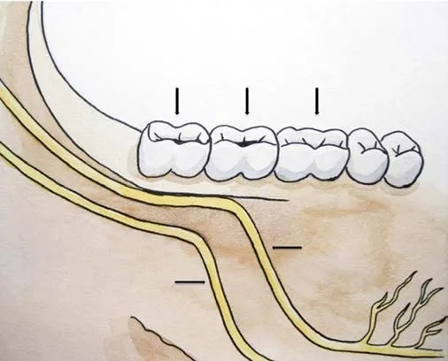
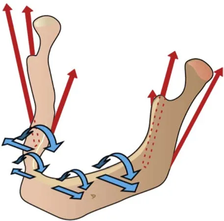

نسخه استخراجشده؛ ترجمه یا تأیید علمی انجام نشده است. وضعیت: captured
در مندیبل خلفی، فوسای سابمندیبولار ایجاب میکند که هرچه به سمت دیستال پیش میروی، زاویهی کاشت بیشتر شود. یعنی زاویهی یکسان برای دو ایمپلنت مجاور، در این ناحیه یک خطای طراحی است.
آناتومی استخوانی خلفی الگوهای متفاوتی دارد: از مستقیم و بدون زاویه تا زاویهدار خفیف و شکلهای شدیدتر. هر الگو زاویه و طول متفاوتی میطلبد — و این تفاوتها فقط در مقطع دیده میشوند.
و پدیدهای که به آن کمتر توجه میشود: مندیبل هنگام باز کردن دهان یا حرکات پروتروسیو، به سمت خط وسط خم میشود. این خمش در طراحی پروتز طولانی که دو نیمهی قوس را به هم متصل میکند، یک ملاحظهی واقعی است.

مندیبل خلفی نسبت به ماگزیلای خلفی، کمتر کاندید افزایش ارتفاع است — مگر با پیوند بلاک یا تکنیکهای پیشرفتهتر. در ماگزیلای خلفی، پیوند برای ارتفاع به یک روال معمول تبدیل شده؛ در مندیبل خلفی چنین نیست.
دلیلش ترکیبی است: کانال مندیبل سقف ارتفاع را تعیین میکند، دسترسی جراحی محدودتر است، و پیوند عمودی در این ناحیه پیشبینیپذیری کمتری دارد. برای همین در تحلیل شدید خلفی، ایمپلنت کوتاه بهعنوان جایگزین پیوند مطرح میشود.
و یادآوری از ماژول اول: وقتی ارتفاع محدود است، قطر مؤثرترین اهرم باقیمانده برای افزایش سطح در ناحیهی پرتنش کرستال است — به شرطی که عرض ریج و فاصلههای ایمنی اجازه بدهند.
